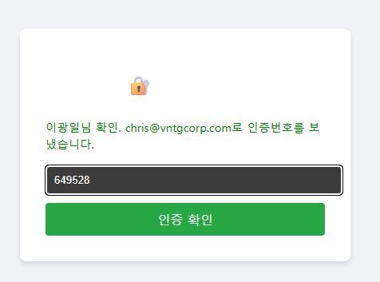
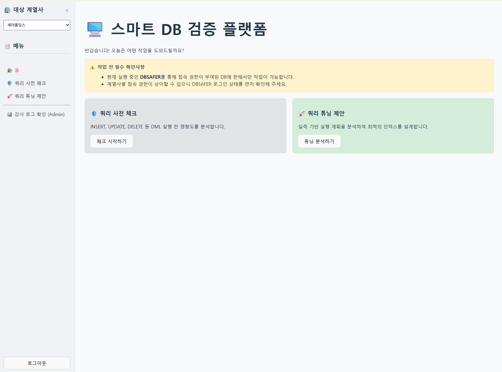
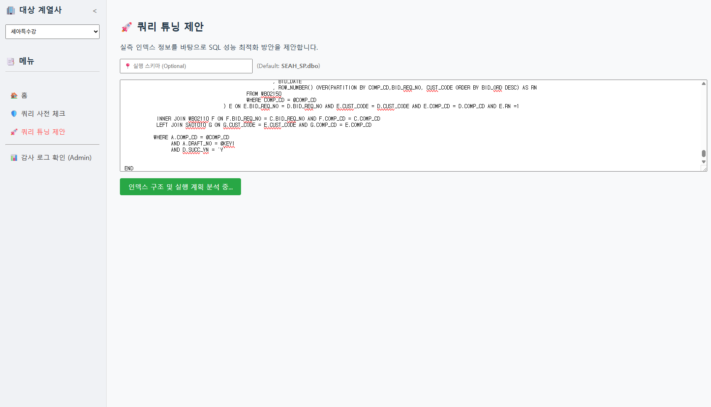
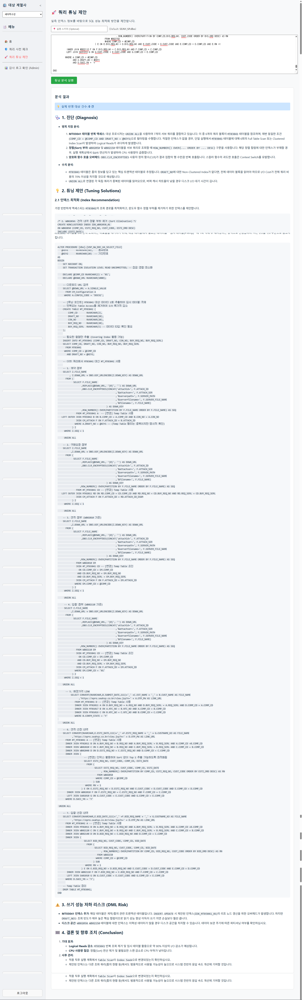
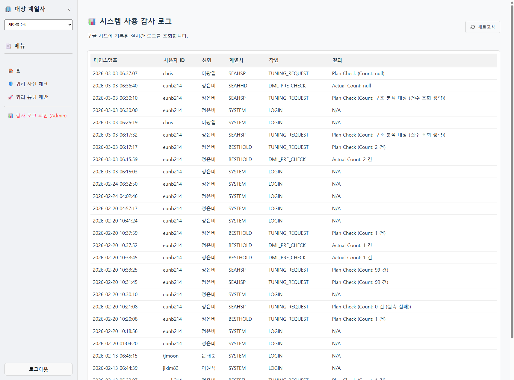

운영 DB와 직접 연결하여 쿼리 위험도를 AI가 즉시 판단하고,
튜닝 제안과 감사로그까지 한 번에 제공하는 스마트 데이터베이스 검증 시스템
운영 DB에 쿼리를 반영하기 전, AI가 위험도를 자동으로 판단합니다. 실수로 인한 장애를 사전에 차단합니다.
느리거나 비효율적인 쿼리를 분석하여 AI가 구체적인 튜닝 방법을 제안합니다. DBA 없이도 최적화가 가능합니다.
누가, 언제, 어떤 작업을 했는지 이력을 추적합니다. 보안 감사와 컴플라이언스 대응에 활용됩니다.
운영 DB에 쿼리를 반영하기 전, 플랫폼에 먼저 제출합니다. AI가 위험도와 영향 범위를 분석하여 안전 여부를 즉시 알려줍니다. DBA에게 별도로 검토 요청할 필요가 없습니다.
응답이 느린 쿼리를 플랫폼에 입력하면 AI가 실행 계획을 분석하고 인덱스 추가, 조인 방식 변경 등 구체적인 튜닝 방법을 제안합니다.
감사로그를 통해 특정 기간 동안 누가 어떤 쿼리를 실행했는지 추적합니다. 장애 발생 시 원인 파악, 보안 감사 대응에 활용됩니다.
주 단위 테스트 DB 복사본이 아닌, 실시간 운영 DB 스키마와 실행 계획을 직접 참조합니다. "환경 불일치"로 인한 장애를 원천 차단합니다.
단순 문법 체크 및 기초 인덱스 분석 업무를 AI가 대행하여 DBA의 전문 검토 시간을 획기적으로 절감합니다. DBA는 더 복잡한 문제에 집중할 수 있습니다.
운영 반영 전 '영향도 분석'과 '튜닝 제안'을 통해 개발자 스스로 고품질 SQL을 작성하는 체계를 구축합니다.
실시간 운영 환경 기반 사전 검증으로 배포 후 장애 발생 가능성을 최소화합니다.
AI 튜닝 제안을 통해 전사 SQL 품질이 높아지고 DB 전체 성능이 개선됩니다.
개발자 자율 검증으로 DBA의 단순 반복 업무가 줄고, 팀 간 협업 속도가 빨라집니다.
이미지를 클릭하면 크게 볼 수 있습니다




